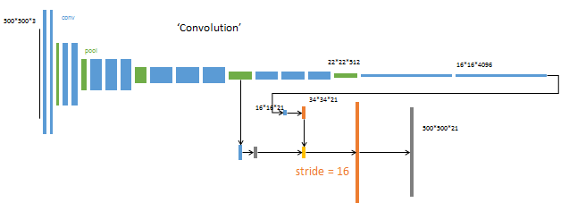

论文《Fully Convolutional Networks for Semantic Segmentation》 是图像分割的milestone论文。
fcn开源代码
github下载地址https://github.com/shelhamer/fcn.berkeleyvision.org
核心思想
该论文包含了当下CNN的三个思潮
- 不含全连接层(fc)的全卷积(fully conv)网络。可适应任意尺寸输入。
- 增大数据尺寸的反卷积(deconv)层。能够输出精细的结果。
- 结合不同深度层结果的跳级(skip)结构。同时确保鲁棒性和精确性。
一些重点
损失函数是在最后一层的 spatial map上的 pixel 的 loss 和，在每一个 pixel 使用 softmax loss
使用 skip 结构融合多层（3层）输出，底层网络应该可以预测更多的位置信息，因为他的感受野小可以看到小的 pixels
上采样 lower-resolution layers 时，如果采样后的图因为 padding 等原因和前面的图大小不同，使用 crop ，当裁剪成大小相同的，spatially aligned ，使用 concat 操作融合两个层
预备知识
CNN与FCN
通常cnn网络在卷积之后会接上若干个全连接层，将卷积层产生的特征图（feature map）映射成为一个固定长度的特征向量。一般的CNN结构适用于图像级别的分类和回归任务，因为它们最后都期望得到输入图像的分类的概率，如ALexNet网络最后输出一个1000维的向量表示输入图像属于每一类的概率。
FCN对图像进行像素级的分类，从而解决了语义级别的图像分割问题。与经典的CNN在卷积层使用全连接层得到固定长度的特征向量进行分类不同，FCN可以接受任意尺寸的输入图像，采用反卷积层对最后一个卷基层的特征图（feature map）进行上采样，使它恢复到输入图像相同的尺寸，从而可以对每一个像素都产生一个预测，同时保留了原始输入图像中的空间信息，最后奇偶在上采样的特征图进行像素的分类。
-全卷积网络(FCN)是从抽象的特征中恢复出每个像素所属的类别。即从图像级别的分类进一步延伸到像素级别的分类。
FCN将传统CNN中的全连接层转化成一个个的卷积层。如下图所示，在传统的CNN结构中，前5层是卷积层，第6层和第7层分别是一个长度为4096的一维向量，第8层是长度为1000的一维向量，分别对应1000个类别的概率。FCN将这3层表示为卷积层，卷积核的大小(通道数，宽，高)分别为（4096,1,1）、（4096,1,1）、（1000,1,1）。所有的层都是卷积层，故称为全卷积网络。

简单的说，FCN与CNN的区别在于FCN把CNN最后的全连接层换成卷积层，输出一张已经label好的图。
网络结构
网络结构如下。输入可为任意尺寸图像彩色图像；输出与输入尺寸相同，深度为：20类目标+背景=21。 （在PASCAL数据集上进行的，PASCAL一共20类）

全卷积-提取特征
虚线上半部分为全卷积网络。（蓝：卷积，绿：max pooling）。对于不同尺寸的输入图像，各层数据的尺寸（height，width）相应变化，深度（channel）不变。
这部分由深度学习分类问题中经典网络AlexNet1修改而来。只不过，把最后两个全连接层（fc）改成了卷积层。
论文中，达到最高精度的分类网络是VGG16，但提供的模型基于AlexNet。此处使用AlexNet便于绘图。
全连接层转换为卷积层
在两种变换中，将全连接层转化为卷积层在实际运用中更加有用。假设一个卷积神经网络的输入是 224x224x3 的图像，一系列的卷积层和下采样层将图像数据变为尺寸为 7x7x512 的激活数据体。AlexNet使用了两个尺寸为4096的全连接层，最后一个有1000个神经元的全连接层用于计算分类评分。我们可以将这3个全连接层中的任意一个转化为卷积层：
针对第一个连接区域是[7x7x512]的全连接层，令其滤波器尺寸为F=7，这样输出数据体就为[1x1x4096]了。
针对第二个全连接层，令其滤波器尺寸为F=1，这样输出数据体为[1x1x4096]。
对最后一个全连接层也做类似的，令其F=1，最终输出为[1x1x1000]
逐像素预测
虚线下半部分中，分别从卷积网络的不同阶段，以卷积层（蓝色×3）预测深度为21的分类结果。
例：第一个预测模块
输入16*16*4096，卷积模板尺寸1*1，输出16*16*21。
相当于对每个像素施加一个全连接层，从4096维特征，预测21类结果。
采用反卷积层对最后一个卷积层的feature map进行上采样, 使它恢复到输入图像相同的尺寸，从而可以对每个像素都产生了一个预测, 同时保留了原始输入图像中的空间信息, 最后在上采样的特征图上进行逐像素分类。
具体过程：
经过多次卷积和pooling以后，得到的图像越来越小，分辨率越来越低。其中图像到
最后的输出是21张heatmap经过upsampling变为原图大小的图片，为了对每个像素进行分类预测label成最后已经进行语义分割的图像，这里有一个小trick，就是最后通过逐个像素地求其在21张图像该像素位置的最大数值描述（概率）作为该像素的分类。因此产生了一张已经分类好的图片，如下图右侧有狗狗和猫猫的图。
反卷积-升采样
（这里会先进行上采样，即扩大像素；再进行卷积——通过学习获得权值）
下半部分，反卷积层（橙色×3）可以把输入数据尺寸放大。和卷积层一样，上采样的具体参数经过训练确定。
这里图像的反卷积与下图的full卷积原理是一样的，使用了这一种反卷积手段使得图像可以变大，FCN作者使用的方法是这里所说反卷积的一种变体，这样就可以获得相应的像素值，图像可以实现end to end。
（feature map值与权重不同，生成的上采样的二值区域也是不一样的。）
例：反卷积2
输入：每个像素值等于filter的权重
输出：步长为stride，截取的宽度为pad。
跳级结构
如下图所示：对原图进行卷积conv1、pool1后图像缩小为1/2；对图像进行第二次卷积conv2、pool2后图像缩小为1/4；对图像进行第三次卷积conv3、pool3后图像缩小为1/8，此时保留pool3的featuremap；对图像进行第四次卷积conv4、pool4后图像缩小为1/16，此时保留pool4的featuremap；对图像进行第五次卷积conv5、pool5后图像缩小为1/32，然后把原来CNN操作过程中的全连接编程卷积操作的conv6、conv7，图像的featuremap的大小依然为原图的1/32,此时图像不再叫featuremap而是叫heatmap。
其实直接使用前两种结构就已经可以得到结果了，这个上采样是通过反卷积（deconvolution）实现的，对第五层的输出（32倍放大）反卷积到原图大小。但是得到的结果还上不不够精确，一些细节无法恢复。于是将第四层的输出和第三层的输出也依次反卷积，分别需要16倍和8倍上采样，结果过也更精细一些了。这种做法的好处是兼顾了local和global信息。
网络的loss层
sem是网络输入层的top:’sem’ 是数据的标签
fcn网络的输入batchsize是1，因为分割loss的计算在每一个像素点都一个真值（标签），相当于每一个像素点的都是一个分类任务，一个图像就有对应像素点个样本。所以分割任务的batch是一个图片，将一个图片最后在所有像素点上的分类loss加起来计算一次梯度的更新。
训练
训练过程分为四个阶段，也体现了作者的设计思路，值得研究。
第1阶段

以经典的分类网络为初始化。最后两级是全连接（红色），参数弃去不用。
第2阶段

从特征小图（16*16*4096）预测分割小图（16*16*21），之后直接升采样为大图。
反卷积（橙色）的步长为32，这个网络称为FCN-32s。
这一阶段使用单GPU训练约需3天。
第3阶段

升采样分为两次完成（橙色×2）。
在第二次升采样前，把第4个pooling层（绿色）的预测结果（蓝色）融合进来。使用跳级结构提升精确性。
第二次反卷积步长为16，这个网络称为FCN-16s。
这一阶段使用单GPU训练约需1天。
第4阶段

升采样分为三次完成（橙色×3）。
进一步融合了第3个pooling层的预测结果。
第三次反卷积步长为8，记为FCN-8s。
这一阶段使用单GPU训练约需1天。
较浅层的预测结果包含了更多细节信息。比较2,3,4阶段可以看出，跳级结构利用浅层信息辅助逐步升采样，有更精细的结果。
其他参数
minibatch：20张图片
learning rate：0.001
初始化：
分类网络之外的卷积层参数初始化为0。
反卷积参数初始化为bilinear插值。最后一层反卷积固定位bilinear插值不做学习。
结论
总体来说，本文的逻辑如下：
- 想要精确预测每个像素的分割结果
- 必须经历从大到小，再从小到大的两个过程
- 在升采样过程中，分阶段增大比一步到位效果更好
- 在升采样的每个阶段，使用降采样对应层的特征进行辅助